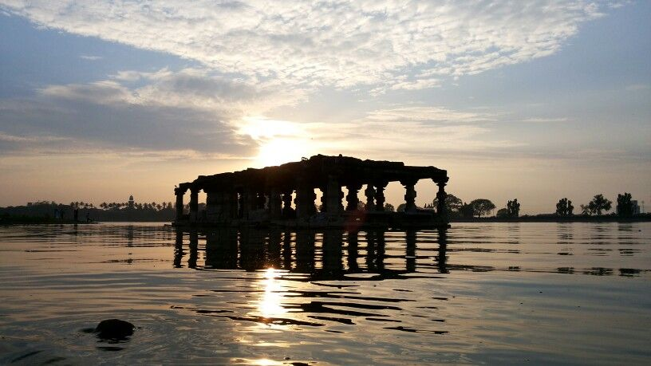

Kolhapur is a city located in the southwestern part of Maharashtra, India. It is situated on the banks of the Panchganga River and is surrounded by lush green hills. Kolhapur has a rich history and cultural heritage, dating back to the 3rd century BCE when it was known as Karvir. It has been ruled by various dynasties, including the Satavahanas, Rashtrakutas, and the Marathas. The city is renowned for its unique cuisine, particularly the spicy Kolhapuri chicken and mutton dishes, as well as for its handicrafts such as Kolhapuri chappals (footwear) and sarees. Kolhapur is also home to several temples, including the famous Mahalaxmi Temple, a major pilgrimage site for Hindus. The city has a vibrant arts and culture scene and is known for its traditional folk dance, the Lavani. With its rich history, unique culture, and scenic beauty, Kolhapur is a must-visit destination for anyone traveling to Maharashtra.
Read more

Ranakala Lake, also known as Rankala Talao, is a man-made lake located in Kolhapur, Maharashtra, India. Spanning an area of approximately 122 acres, the lake is surrounded by lush green gardens and walking paths, making it a popular spot for picnics and leisurely walks. Visitors can enjoy boating on the lake, and there is a statue of Tarabai, the warrior queen of the Maratha Empire, which has become a symbol of the city's rich history. The annual Rankala Mahotsav, a cultural festival held in the vicinity of the lake, is a major attraction for locals and tourists alike.
Read more

The Mahalaxmi Temple is a prominent Hindu temple dedicated to the goddess of wealth, prosperity, and good fortune located in Kolhapur, Maharashtra, India. The temple complex spread over 5 acres features a towering entrance gateway and houses several smaller shrines and prayer halls. The main temple is built in the Hemadpanthi style of architecture and features a four-armed idol of Mahalaxmi adorned with gold and silver jewelry. The temple is a popular pilgrimage site and attracts millions of devotees every year, particularly during the Navratri festival.
Read more

The New Palace in Kolhapur, Maharashtra, India is a grand palace built in the early 20th century, which served as the residence of the royal family of Kolhapur. The palace is a striking example of Indo-Saracenic architecture, with influences from Mughal, Rajasthani, and Gothic styles. The palace complex includes a museum that houses a vast collection of artifacts, including weapons, clothes, jewelry, and other items belonging to the royal family. The palace also features a beautiful garden, a fountain, and a zoo that houses several species of animals, including tigers, leopards, and deer. The New Palace is a popular tourist attraction and offers a glimpse into the rich history and culture of Kolhapur.
Read more